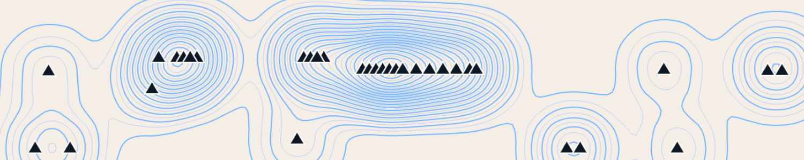
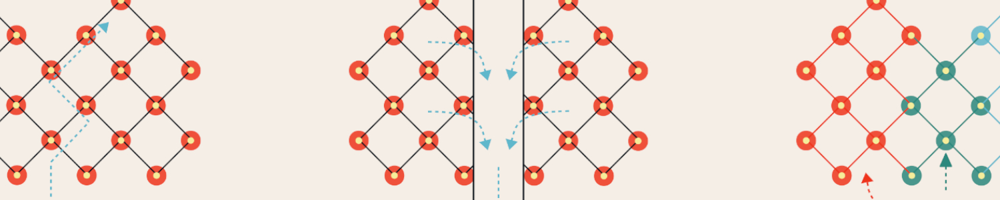

Quentin Lobbé
Chercheur
_____
ISC-PIF
113 Rue Nationale
75013 Paris
quentin.lobbe (at) iscpif.fr
_____
Github : lobbeque
_____
En ce moment
Depuis janvier 2019, je suis chercheur en contrat post-doctoral à l’Institut des Systèmes Complexes Paris Île-de-France (ISCPIF) où je développe une méthode de reconstruction phylogénétique de la science appelée phylomémie. Ces travaux sont réalisés dans le cadre de l’ANR Epique, en collaboration avec David Chavalarias et Alexandre Delanoë (inventeur de Gargantext).
Hors les murs du laboratoire, je travaille à l’écriture d’un roman d’anticipation «Nés des cendres», tourne des films avec les copains, manifeste à l’automne, brasse du houblon l’hiver, prépare mes semis de carottes au printemps et joue de la vielle à roue l’été (voir les péripéties).
Un peu avant
Après l’obtention d’une bourse futur & ruptures de la fondation Mines-Télécom en novembre 2015, je débute ma thèse
à Télécom ParisTech sous la direction
de Pierre Senellart et
Dana Diminescu.
À la frontière de l’informatique et de la sociologie mes travaux de thèse visent à définir de nouveaux outils théoriques et techniques
susceptibles de faciliter l’exploration de vastes corpus d’archives Web. Ce faisant, ma thèse prolonge et s’inscrit dans la lignée de
l’Atlas e-Diasporas : une initiative de recherche pionnière
qui, à la fin des années 2000, permit de cartographier plusieurs milliers de sites Web migrants et dont les archives sont aujourd’hui
conservées à l’Institut National de l’Audiovisuel (INA).
Au fil de mes recherches, j’en arrive à définir la notion de fragment Web : un sous ensemble cohérent et auto-suffisant d’une page Web.
Avec le fragment Web et la grammaire analytique qu’il introduit, il devient pour la première fois possible de reconstruire l’histoire de chacun
des sites Web de l’Atlas et d’étudier leurs dynamiques propres : disparition progressive de la surface de la toile, encrage au sein d’une communauté
en ligne, migration d’un territoire du Web à un autre, etc. Mes recherches ambitionnent ainsi de faire du Web le terrain de fouille des archéologues
et historiens de demain.
Je soutiens ma thèse en novembre 2018 devant un jury constitué de Bruno Bachimont (rapporteur), Marc Spaniol (rapporteur),
Anat Ben-David, Valérie Schafer, Bruno Defude et Julien Masanès. En février 2020, l'INA décerne à mes travaux de thèse le
Prix de la Recherche 2019 de l'Inathèque.
Au tout début
Je suis né le 17 novembre 1989 à Compiègne, vers 8h30, au petit matin. Je m'apprête alors à suivre l’ensemble de ma scolarité en Picardie, d’abord au collège Clotaire Baujoin de Thourotte, puis à Noyon au lycée Jean Calvin. J’entre à l’Université de Technologie de Compiègne en 2007 et y suis des études d’ingénieur en Informatique avec une spécialisation en fouille et visualisation de données. À cette formation viennent s’ajouter deux cycles d’enseignements dit mineurs : culture du numérique et philosophie de la technique. J’obtiens mon diplôme d’ingénieur en 2013 après un séjour d’un semestre en Chine à l’Université de Technologie sino-européenne de l’Université de Shanghai. De retour en France, je réalise un stage de six mois chez Linkfluence centré sur l’exploration de données Web hétérogènes. L'entreprise Twenga me recrute ensuite en tant qu’ingénieur R&D spécialisé dans la construction et la mise en production de moteurs de recherches (50 millions de documents texte et image, requêtage à haute fréquence, technologies libres Lucene & Solr).
